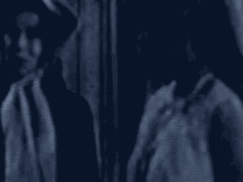

24
25
8753
1 (The jury was assembled at 10:00 a.m. and
2 deliberations resumed.)
3 THE COURT: Good morning.
4 THE JURY: Good morning.
5 THE COURT: Mr. Kenneally, will you take attendance,
6 please.
7 DEPUTY CLERK: Ladies and gentlemen of the jury,
8 please answer to your presence as your name is called.
9 (July roll called; all present)
10 DEPUTY CLERK: Madame Forelady, has the jury reached
11 a verdict on the Special Verdict Form?
12 THE FORELADY: Yes, we have.
13 DEPUTY CLERK: On Section I, The Gateway Factors,
14 Part A, Question 1, your answer is? How do you find?
15 THE FORELADY: The first one: We unanimously find
16 that this factor has been proved beyond a reasonable doubt
17 with regard to all of the capital counts.
18 DEPUTY CLERK: With the continuation on Part A of
19 Section I, Question 2.
20 THE FORELADY: Yes. 2, also the first one: We
21 unanimously find that this factor has been proved beyond a
22 reasonable doubt with regard to all of the capital counts.
23 DEPUTY CLERK: Question 3 of Part A, Section I.
24 THE FORELADY: Question 3, also the first one: We
25 unanimously find that this factor has been proved beyond a
8754
1 reasonable doubt with regard to all the capital counts.
2 DEPUTY CLERK: Part A, Question 4.
3 THE FORELADY: Question 4, the first one also: We
4 unanimously find that this factor has been proved beyond a
5 reasonable doubt with regard to all of the capital counts.
6 DEPUTY CLERK: Going to Section II, Statutory
7 Aggravating Factors, Part A, what is your answer?
8 THE FORELADY: The first one: We unanimously find
9 that this factor has been proved beyond a reasonable doubt
10 with regard to all the capital counts.
1